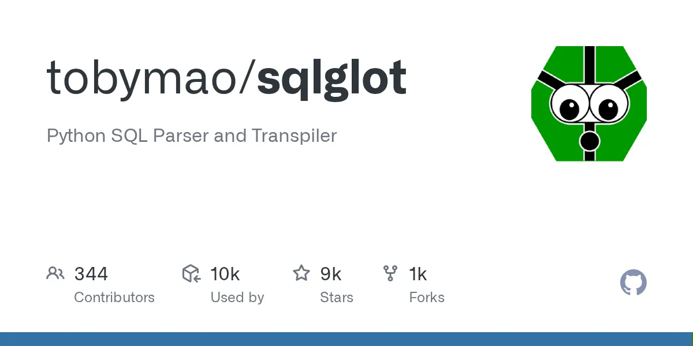
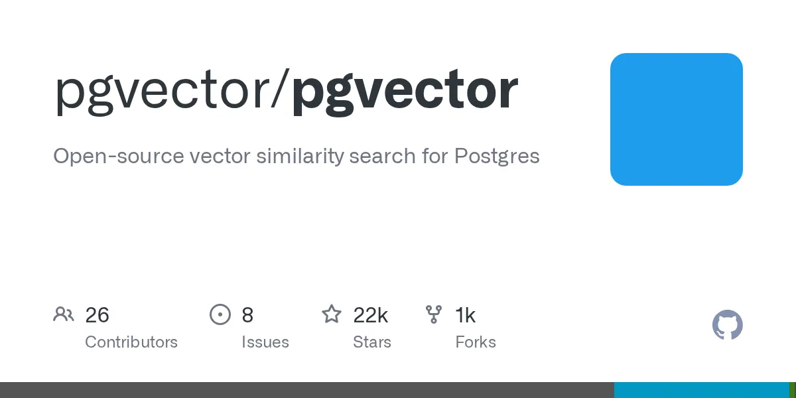
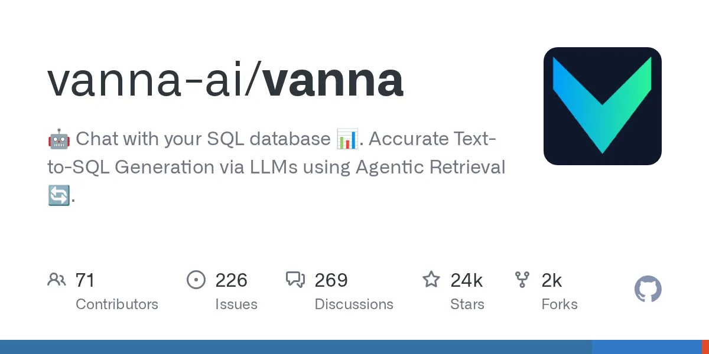

Text-to-SQL · Security Architecture
Defense-in-depth guide: schema grounding, query validation, read-only enforcement, row-level security, and observability. 180 citations across 7 sub-topics. The threat model is not crashes — it's silent plausible wrong answers.
Defense Stack — Pipeline Order
pg_read_all_data role (PG 14+) ·
read replica as physical barrier ·
schema pruning (omit sensitive columns from LLM prompt)
default_transaction_read_only can be overridden in-session — role-level GRANT is the only true enforcement.
[7]
Deploy first: cheapest, most reliable boundary.
ALTER TABLE … ENABLE ROW SECURITY ·
session variable policies ·
column-level GRANT SELECT (col) (revoke table-level first)
Threat ✕ Layer Coverage
| Attack / Failure Mode | Schema Grounding |
Query Validation |
Read-Only Role |
RLS / Column |
Observ- ability |
|---|---|---|---|---|---|
| Hallucinated table or column | ✓ stops | ⚠ partial | — | — | ⚠ detects |
| DDL (DROP / ALTER / TRUNCATE) | — | ✓ blocks | ✓ blocks | — | — |
| SQL injection via NL input | — | ⚠ partial | ✓ limits | ✓ limits | ⚠ detects |
| Prompt injection (embedded SQL fragments) | ✗ passes | ⚠ partial | ✓ limits | ✓ limits | ⚠ detects |
| ToxicSQL backdoor (training poison) [14] | ✗ passes | ⚠ partial | ✓ limits | ✓ limits | ⚠ detects |
| Cross-tenant row read | — | — | — | ✓ blocks | ⚠ detects |
| Silent semantic correctness error | ✗ passes | ✗ passes | — | — | ⚠ detects |
Residual Risk — What Survives All Layers
A well-grounded, structurally valid query can silently aggregate on the wrong time window, join on the wrong key, or misinterpret an ambiguous column name. Crashes are not the threat model. [15]
The NL2SQL-Bugs benchmark found 75.16% average LLM detection accuracy across a 9-category semantic error taxonomy — and 6.91% of BIRD's own gold-standard benchmark contains previously undetected semantic errors. [3] Whether LLM self-grading of result plausibility is reliable enough for production quality gates remains the most consequential unresolved question in the text-to-SQL safety literature.
Key Tools & Libraries

Python SQL parser supporting 31 dialects with full AST traversal, transformation, and type inference. Recommended engine for query validation.

PostgreSQL vector extension for ANN search. Supports HNSW and IVFFlat, 16k-dim vectors via halfvec, hybrid SQL+vector with WHERE filtering.

RAG text-to-SQL framework that embeds DDL, documentation, and example SQL queries, retrieving the 10 most relevant pieces per query for grounded prompts.
Semantic Search Augmentation
Augments the pipeline · Does not replace SQL
WHERE category = $1 ORDER BY embedding <=> $2 LIMIT k ·
HNSW index with RRF fusion for keyword+semantic merging ·
iterative scans (pgvector 0.8+) prevent overfiltering
ef_construction ≥ 2×m, ef_search ≥ k — defaults are rarely appropriate at scale.
HNSW needs to fit in RAM; above 5–10M vectors use DiskANN.
Sub-Research Topics — 7 Pages · 180 Citations
~97% of wrong SQL executes cleanly. A field guide to the failure modes and the hardening stack that contains them.
The layered stack of schema linking, representation, retrieval, and execution feedback that grounds text-to-SQL in a real database.
Purpose-built read-only roles, column/row filtering, read replicas as physical write boundaries for LLM-generated SQL.
Five-layer pipeline: allowlists, AST structural checks, semantic schema binding, policy injection, and DB-level enforcement with evidence logging.
Nearest-neighbor row retrieval, index parameter tuning without wrecking recall, and grounding a text-to-SQL pipeline with hybrid search.
Observability helps teams debug production; audit logging proves compliance and accountability.
PostgreSQL RLS is the most cost-efficient multi-tenant isolation pattern, but requires non-owner roles and rigorous testing to prevent data leaks.